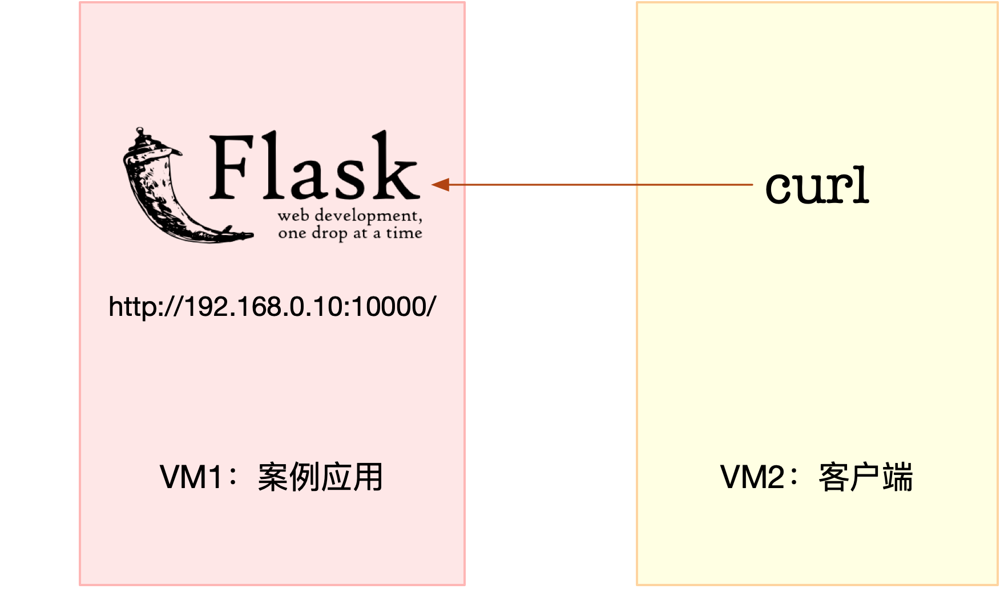

- 00 开篇词 别再让Linux性能问题成为你的绊脚石.md.html
- 01 如何学习Linux性能优化？.md.html
- 02 基础篇：到底应该怎么理解“平均负载”？.md.html
- 03 基础篇：经常说的 CPU 上下文切换是什么意思？（上）.md.html
- 04 基础篇：经常说的 CPU 上下文切换是什么意思？（下）.md.html
- 05 基础篇：某个应用的CPU使用率居然达到100%，我该怎么办？.md.html
- 06 案例篇：系统的 CPU 使用率很高，但为啥却找不到高 CPU 的应用？.md.html
- 07 案例篇：系统中出现大量不可中断进程和僵尸进程怎么办？（上）.md.html
- 08 案例篇：系统中出现大量不可中断进程和僵尸进程怎么办？（下）.md.html
- 09 基础篇：怎么理解Linux软中断？.md.html
- 10 案例篇：系统的软中断CPU使用率升高，我该怎么办？.md.html
- 11 套路篇：如何迅速分析出系统CPU的瓶颈在哪里？.md.html
- 12 套路篇：CPU 性能优化的几个思路.md.html
- 13 答疑（一）：无法模拟出 RES 中断的问题，怎么办？.md.html
- 14 答疑（二）：如何用perf工具分析Java程序？.md.html
- 15 基础篇：Linux内存是怎么工作的？.md.html
- 16 基础篇：怎么理解内存中的Buffer和Cache？.md.html
- 17 案例篇：如何利用系统缓存优化程序的运行效率？.md.html
- 18 案例篇：内存泄漏了，我该如何定位和处理？.md.html
- 19 案例篇：为什么系统的Swap变高了（上）.md.html
- 20 案例篇：为什么系统的Swap变高了？（下）.md.html
- 21 套路篇：如何“快准狠”找到系统内存的问题？.md.html
- 22 答疑（三）：文件系统与磁盘的区别是什么？.md.html
- 23 基础篇：Linux 文件系统是怎么工作的？.md.html
- 24 基础篇：Linux 磁盘I_O是怎么工作的（上）.md.html
- 25 基础篇：Linux 磁盘I_O是怎么工作的（下）.md.html
- 26 案例篇：如何找出狂打日志的“内鬼”？.md.html
- 27 案例篇：为什么我的磁盘I_O延迟很高？.md.html
- 28 案例篇：一个SQL查询要15秒，这是怎么回事？.md.html
- 29 案例篇：Redis响应严重延迟，如何解决？.md.html
- 30 套路篇：如何迅速分析出系统I_O的瓶颈在哪里？.md.html
- 31 套路篇：磁盘 I_O 性能优化的几个思路.md.html
- 32 答疑（四）：阻塞、非阻塞 I_O 与同步、异步 I_O 的区别和联系.md.html
- 33 关于 Linux 网络，你必须知道这些（上）.md.html
- 34 关于 Linux 网络，你必须知道这些（下）.md.html
- 35 基础篇：C10K 和 C1000K 回顾.md.html
- 36 套路篇：怎么评估系统的网络性能？.md.html
- 37 案例篇：DNS 解析时快时慢，我该怎么办？.md.html
- 38 案例篇：怎么使用 tcpdump 和 Wireshark 分析网络流量？.md.html
- 39 案例篇：怎么缓解 DDoS 攻击带来的性能下降问题？.md.html
- 40 案例篇：网络请求延迟变大了，我该怎么办？.md.html
- 41 案例篇：如何优化 NAT 性能？（上）.md.html
- 42 案例篇：如何优化 NAT 性能？（下）.md.html
- 43 套路篇：网络性能优化的几个思路（上）.md.html
- 44 套路篇：网络性能优化的几个思路（下）.md.html
- 45 答疑（五）：网络收发过程中，缓冲区位置在哪里？.md.html
- 46 案例篇：为什么应用容器化后，启动慢了很多？.md.html
- 47 案例篇：服务器总是时不时丢包，我该怎么办？（上）.md.html
- 48 案例篇：服务器总是时不时丢包，我该怎么办？（下）.md.html
- 49 案例篇：内核线程 CPU 利用率太高，我该怎么办？.md.html
- 50 案例篇：动态追踪怎么用？（上）.md.html
- 51 案例篇：动态追踪怎么用？（下）.md.html
- 52 案例篇：服务吞吐量下降很厉害，怎么分析？.md.html
- 53 套路篇：系统监控的综合思路.md.html
- 54 套路篇：应用监控的一般思路.md.html
- 55 套路篇：分析性能问题的一般步骤.md.html
- 56 套路篇：优化性能问题的一般方法.md.html
- 57 套路篇：Linux 性能工具速查.md.html
- 58 答疑（六）：容器冷启动如何性能分析？.md.html
- 加餐（一） 书单推荐：性能优化和Linux 系统原理.md.html
- 加餐（二） 书单推荐：网络原理和 Linux 内核实现.md.html
- 用户故事 “半路出家 ”，也要顺利拿下性能优化！.md.html
- 用户故事 运维和开发工程师们怎么说？.md.html
- 结束语 愿你攻克性能难关.md.html
- 捐赠
27 案例篇：为什么我的磁盘I_O延迟很高？
你好，我是倪朋飞。
上一节，我们研究了一个狂打日志引发 I/O 性能问题的案例，先来简单回顾一下。
日志，是了解应用程序内部运行情况，最常用也是最有效的工具。日志一般会分为调试、信息、警告、错误等多个不同级别。
通常，生产环境只用开启警告级别的日志，这一般不会导致 I/O 问题。但在偶尔排查问题时，可能需要我们开启调试日志。调试结束后，很可能忘了把日志级别调回去。这时，大量的调试日志就可能会引发 I/O 性能问题。
你可以用 iostat ，确认是否有 I/O 性能瓶颈。再用 strace 和 lsof ，来定位应用程序以及它正在写入的日志文件路径。最后通过应用程序的接口调整日志级别，完美解决 I/O 问题。
不过，如果应用程序没有动态调整日志级别的功能，你还需要修改应用配置并重启应用，以便让配置生效。
今天，我们再来看一个新的案例。这次案例是一个基于 Python Flask 框架的 Web 应用，它提供了一个查询单词热度的 API，但是API 的响应速度并不让人满意。
非常感谢携程系统研发部资深后端工程师董国星，帮助提供了今天的案例。
案例准备
本次案例还是基于 Ubuntu 18.04，同样适用于其他的 Linux 系统。我使用的案例环境如下所示：
机器配置：2 CPU，8GB 内存
预先安装 docker、sysstat 等工具，如 apt install docker.io sysstat
为了方便你运行今天的案例，我把它打包成了一个 Docker 镜像。这样，你就只需要运行 Docker 命令就可以启动它。
今天的案例需要两台虚拟机，其中一台是案例分析的目标机器，运行 Flask 应用，它的 IP 地址是 192.168.0.10；而另一台作为客户端，请求单词的热度。我画了一张图表示它们的关系，如下所示：

接下来，打开两个终端，分别 SSH 登录到这两台虚拟机中，并在第一台虚拟机中，安装上述工具。
跟以前一样，案例中所有命令都默认以 root 用户运行，如果你是用普通用户身份登陆系统，请运行 sudo su root 命令切换到 root 用户。
到这里，准备工作就完成了。接下来，我们正式进入操作环节。
温馨提示：案例中 Python 应用的核心逻辑比较简单，你可能一眼就能看出问题，但实际生产环境中的源码就复杂多了。所以，我依旧建议，操作之前别看源码，避免先入为主，而要把它当成一个黑盒来分析。这样，你可以更好把握，怎么从系统的资源使用问题出发，分析出瓶颈所在的应用，以及瓶颈在应用中大概的位置。
案例分析
首先，我们在第一个终端中执行下面的命令，运行本次案例要分析的目标应用：
$ docker run --name=app -p 10000:80 -itd feisky/word-pop
然后，在第二个终端中运行 curl 命令，访问 http://192.168.0.10:1000/，确认案例正常启动。你应该可以在 curl 的输出界面里，看到一个 hello world 的输出：
$ curl http://192.168.0.10:10000/
hello world
接下来，在第二个终端中，访问案例应用的单词热度接口，也就是 http://192.168.0.10:1000/popularity/word。
$ curl http://192.168.0.10:1000/popularity/word
稍等一会儿，你会发现，这个接口居然这么长时间都没响应，究竟是怎么回事呢？我们先回到终端一来分析一下。
我们试试在第一个终端里，随便执行一个命令，比如执行 df 命令，查看一下文件系统的使用情况。奇怪的是，这么简单的命令，居然也要等好久才有输出。
$ df
Filesystem 1K-blocks Used Available Use% Mounted on
udev 4073376 0 4073376 0% /dev
tmpfs 816932 1188 815744 1% /run
/dev/sda1 30308240 8713640 21578216 29% /
通过df我们知道，系统还有足够多的磁盘空间。那为什么响应会变慢呢？看来还是得观察一下，系统的资源使用情况，像是 CPU、内存和磁盘 I/O 等的具体使用情况。
这里的思路其实跟上一个案例比较类似，我们可以先用 top 来观察 CPU 和内存的使用情况，然后再用 iostat 来观察磁盘的 I/O 情况。
为了避免分析过程中curl 请求突然结束，我们回到终端二，按 Ctrl+C 停止刚才的应用程序；然后，把curl 命令放到一个循环里执行；这次我们还要加一个 time 命令，观察每次的执行时间：
$ while true; do time curl http://192.168.0.10:10000/popularity/word; sleep 1; done
继续回到终端一来分析性能。我们在终端一中运行 top 命令，观察 CPU 和内存的使用情况：
$ top
top - 14:27:02 up 10:30, 1 user, load average: 1.82, 1.26, 0.76
Tasks: 129 total, 1 running, 74 sleeping, 0 stopped, 0 zombie
%Cpu0 : 3.5 us, 2.1 sy, 0.0 ni, 0.0 id, 94.4 wa, 0.0 hi, 0.0 si, 0.0 st
%Cpu1 : 2.4 us, 0.7 sy, 0.0 ni, 70.4 id, 26.5 wa, 0.0 hi, 0.0 si, 0.0 st
KiB Mem : 8169300 total, 3323248 free, 436748 used, 4409304 buff/cache
KiB Swap: 0 total, 0 free, 0 used. 7412556 avail Mem
PID USER PR NI VIRT RES SHR S %CPU %MEM TIME+ COMMAND
12280 root 20 0 103304 28824 7276 S 14.0 0.4 0:08.77 python
16 root 20 0 0 0 0 S 0.3 0.0 0:09.22 ksoftirqd/1
1549 root 20 0 236712 24480 9864 S 0.3 0.3 3:31.38 python3
观察 top 的输出可以发现，两个CPU的 iowait 都非常高。特别是 CPU0， iowait 已经高达 94 %，而剩余内存还有 3GB，看起来也是充足的。
再往下看，进程部分有一个 python 进程的CPU使用率稍微有点高，达到了 14%。虽然 14% 并不能成为性能瓶颈，不过有点嫌疑——可能跟 iowait 的升高有关。
那这个PID 号为 12280 的 python 进程，到底是不是我们的案例应用呢？
我们在第一个终端中，按下 Ctrl+C，停止 top 命令；然后执行下面的 ps 命令，查找案例应用 app.py 的 PID 号：
$ ps aux | grep app.py
root 12222 0.4 0.2 96064 23452 pts/0 Ss+ 14:37 0:00 python /app.py
root 12280 13.9 0.3 102424 27904 pts/0 Sl+ 14:37 0:09 /usr/local/bin/python /app.py
从 ps 的输出，你可以看到，这个 CPU 使用率较高的进程，正是我们的案例应用。不过先别着急分析 CPU 问题，毕竟 iowait 已经高达 94%， I/O 问题才是我们首要解决的。
接下来，我们在终端一中，运行下面的 iostat 命令，其中:
-d 选项是指显示出 I/O 的性能指标；
-x 选项是指显示出扩展统计信息（即显示所有I/O指标）。
$ iostat -d -x 1
Device r/s w/s rkB/s wkB/s rrqm/s wrqm/s %rrqm %wrqm r_await w_await aqu-sz rareq-sz wareq-sz svctm %util
loop0 0.00 0.00 0.00 0.00 0.00 0.00 0.00 0.00 0.00 0.00 0.00 0.00 0.00 0.00 0.00
sda 0.00 71.00 0.00 32912.00 0.00 0.00 0.00 0.00 0.00 18118.31 241.89 0.00 463.55 13.86 98.40
再次看到 iostat 的输出，你还记得这个界面中的性能指标含义吗？先自己回忆一下，如果实在想不起来，一定要先查看上节内容，或者用 man iostat 查明白。
明白了指标含义，再来具体观察 iostat 的输出。你可以发现，磁盘 sda 的 I/O 使用率已经达到 98% ，接近饱和了。而且，写请求的响应时间高达 18 秒，每秒的写数据为 32 MB，显然写磁盘碰到了瓶颈。
那要怎么知道，这些 I/O请求到底是哪些进程导致的呢？我想，你已经还记得上一节我们用到的 pidstat。
在终端一中，运行下面的 pidstat 命令，观察进程的 I/O 情况：
$ pidstat -d 1
14:39:14 UID PID kB_rd/s kB_wr/s kB_ccwr/s iodelay Command
14:39:15 0 12280 0.00 335716.00 0.00 0 python
从 pidstat 的输出，我们再次看到了PID 号为 12280的结果。这说明，正是案例应用引发I/O 的性能瓶颈。
走到这一步，你估计觉得，接下来就很简单了，上一个案例不刚刚学过吗？无非就是，先用 strace 确认它是不是在写文件，再用 lsof 找出文件描述符对应的文件即可。
到底是不是这样呢？我们不妨来试试。还是在终端一中，执行下面的 strace 命令：
$ strace -p 12280
strace: Process 12280 attached
select(0, NULL, NULL, NULL, {tv_sec=0, tv_usec=567708}) = 0 (Timeout)
stat("/usr/local/lib/python3.7/importlib/_bootstrap.py", {st_mode=S_IFREG|0644, st_size=39278, ...}) = 0
stat("/usr/local/lib/python3.7/importlib/_bootstrap.py", {st_mode=S_IFREG|0644, st_size=39278, ...}) = 0
从 strace 中，你可以看到大量的 stat 系统调用，并且大都为 python 的文件，但是，请注意，这里并没有任何 write 系统调用。
由于 strace 的输出比较多，我们可以用 grep ，来过滤一下 write，比如：
$ strace -p 12280 2>&1 | grep write
遗憾的是，这里仍然没有任何输出。
难道此时已经没有性能问题了吗？重新执行刚才的 top 和 iostat 命令，你会不幸地发现，性能问题仍然存在。
我们只好综合 strace、pidstat 和 iostat 这三个结果来分析了。很明显，你应该发现了这里的矛盾：iostat 已经证明磁盘 I/O 有性能瓶颈，而 pidstat 也证明了，这个瓶颈是由 12280 号进程导致的，但 strace 跟踪这个进程，却没有找到任何 write 系统调用。
这就奇怪了。难道因为案例使用的编程语言是 Python ，而Python 是解释型的，所以找不到？还是说，因为案例运行在 Docker 中呢？这里留个悬念，你自己想想。
文件写，明明应该有相应的write系统调用，但用现有工具却找不到痕迹，这时就该想想换工具的问题了。怎样才能知道哪里在写文件呢？
这里我给你介绍一个新工具， filetop。它是 bcc 软件包的一部分，基于 Linux 内核的 eBPF（extended Berkeley Packet Filters）机制，主要跟踪内核中文件的读写情况，并输出线程ID（TID）、读写大小、读写类型以及文件名称。
eBPF 的工作原理，你暂时不用深究，后面内容我们会逐渐接触到，先会使用就可以了。
至于老朋友 bcc 的安装方法，可以参考它的 Github 网站 https://github.com/iovisor/bcc。比如在 Ubuntu 16 以上的版本中，你可以运行下面的命令来安装它：
sudo apt-key adv --keyserver keyserver.ubuntu.com --recv-keys 4052245BD4284CDD
echo "deb https://repo.iovisor.org/apt/$(lsb_release -cs) $(lsb_release -cs) main" | sudo tee /etc/apt/sources.list.d/iovisor.list
sudo apt-get update
sudo apt-get install bcc-tools libbcc-examples linux-headers-$(uname -r)
安装后，bcc 提供的所有工具，就全部安装到了 /usr/share/bcc/tools 这个目录中。接下来我们就用这个工具，观察一下文件的读写情况。
首先，在终端一中运行下面的命令：
# 切换到工具目录
$ cd /usr/share/bcc/tools
# -C 选项表示输出新内容时不清空屏幕
$ ./filetop -C
TID COMM READS WRITES R_Kb W_Kb T FILE
514 python 0 1 0 2832 R 669.txt
514 python 0 1 0 2490 R 667.txt
514 python 0 1 0 2685 R 671.txt
514 python 0 1 0 2392 R 670.txt
514 python 0 1 0 2050 R 672.txt
...
TID COMM READS WRITES R_Kb W_Kb T FILE
514 python 2 0 5957 0 R 651.txt
514 python 2 0 5371 0 R 112.txt
514 python 2 0 4785 0 R 861.txt
514 python 2 0 4736 0 R 213.txt
514 python 2 0 4443 0 R 45.txt
你会看到，filetop 输出了 8 列内容，分别是线程ID、线程命令行、读写次数、读写的大小（单位KB）、文件类型以及读写的文件名称。
这些内容里，你可能会看到很多动态链接库，不过这不是我们的重点，暂且忽略即可。我们的重点，是一个 python 应用，所以要特别关注 python 相关的内容。
多观察一会儿，你就会发现，每隔一段时间，线程号为 514 的 python 应用就会先写入大量的 txt 文件，再大量地读。
线程号为 514 的线程，属于哪个进程呢？我们可以用 ps 命令查看。先在终端一中，按下 Ctrl+C ，停止 filetop ；然后，运行下面的 ps 命令。这个输出的第二列内容，就是我们想知道的进程号：
$ ps -efT | grep 514
root 12280 514 14626 33 14:47 pts/0 00:00:05 /usr/local/bin/python /app.py
我们看到，这个线程正是案例应用 12280的线程。终于可以先松一口气，不过还没完，filetop 只给出了文件名称，却没有文件路径，还得继续找啊。
我再介绍一个好用的工具，opensnoop 。它同属于 bcc 软件包，可以动态跟踪内核中的 open 系统调用。这样，我们就可以找出这些 txt 文件的路径。
接下来，在终端一中，运行下面的 opensnoop 命令：
$ opensnoop
12280 python 6 0 /tmp/9046db9e-fe25-11e8-b13f-0242ac110002/650.txt
12280 python 6 0 /tmp/9046db9e-fe25-11e8-b13f-0242ac110002/651.txt
12280 python 6 0 /tmp/9046db9e-fe25-11e8-b13f-0242ac110002/652.txt
这次，通过 opensnoop 的输出，你可以看到，这些 txt 路径位于 /tmp 目录下。你还能看到，它打开的文件数量，按照数字编号，从 0.txt 依次增大到 999.txt，这可远多于前面用 filetop 看到的数量。
综合 filetop 和 opensnoop ，我们就可以进一步分析了。我们可以大胆猜测，案例应用在写入 1000 个txt文件后，又把这些内容读到内存中进行处理。我们来检查一下，这个目录中是不是真的有 1000 个文件：
$ ls /tmp/9046db9e-fe25-11e8-b13f-0242ac110002 | wc -l
ls: cannot access '/tmp/9046db9e-fe25-11e8-b13f-0242ac110002': No such file or directory
0
操作后却发现，目录居然不存在了。怎么回事呢？我们回到 opensnoop 再观察一会儿：
$ opensnoop
12280 python 6 0 /tmp/defee970-fe25-11e8-b13f-0242ac110002/261.txt
12280 python 6 0 /tmp/defee970-fe25-11e8-b13f-0242ac110002/840.txt
12280 python 6 0 /tmp/defee970-fe25-11e8-b13f-0242ac110002/136.txt
原来，这时的路径已经变成了另一个目录。这说明，这些目录都是应用程序动态生成的，用完就删了。
结合前面的所有分析，我们基本可以判断，案例应用会动态生成一批文件，用来临时存储数据，用完就会删除它们。但不幸的是，正是这些文件读写，引发了 I/O 的性能瓶颈，导致整个处理过程非常慢。
当然，我们还需要验证这个猜想。老办法，还是查看应用程序的源码 app.py，
@app.route("/popularity/<word>")
def word_popularity(word):
dir_path = '/tmp/{}'.format(uuid.uuid1())
count = 0
sample_size = 1000
def save_to_file(file_name, content):
with open(file_name, 'w') as f:
f.write(content)
try:
# initial directory firstly
os.mkdir(dir_path)
# save article to files
for i in range(sample_size):
file_name = '{}/{}.txt'.format(dir_path, i)
article = generate_article()
save_to_file(file_name, article)
# count word popularity
for root, dirs, files in os.walk(dir_path):
for file_name in files:
with open('{}/{}'.format(dir_path, file_name)) as f:
if validate(word, f.read()):
count += 1
finally:
# clean files
shutil.rmtree(dir_path, ignore_errors=True)
return jsonify({'popularity': count / sample_size * 100, 'word': word})
源码中可以看到，这个案例应用，在每个请求的处理过程中，都会生成一批临时文件，然后读入内存处理，最后再把整个目录删除掉。
这是一种常见的利用磁盘空间处理大量数据的技巧，不过，本次案例中的 I/O 请求太重，导致磁盘 I/O 利用率过高。
要解决这一点，其实就是算法优化问题了。比如在内存充足时，就可以把所有数据都放到内存中处理，这样就能避免 I/O 的性能问题。
你可以检验一下，在终端二中分别访问 http://192.168.0.10:10000/popularity/word 和 http://192.168.0.10:10000/popular/word ，对比前后的效果：
$ time curl http://192.168.0.10:10000/popularity/word
{
"popularity": 0.0,
"word": "word"
}
real 2m43.172s
user 0m0.004s
sys 0m0.007s
$ time curl http://192.168.0.10:10000/popular/word
{
"popularity": 0.0,
"word": "word"
}
real 0m8.810s
user 0m0.010s
sys 0m0.000s
新的接口只要8秒就可以返回，明显比一开始的 3 分钟好很多。
当然，这只是优化的第一步，并且方法也不算完善，还可以做进一步的优化。不过，在实际系统中，我们大都是类似的做法，先用最简单的方法，尽早解决线上问题，然后再继续思考更好的优化方法。
小结
今天，我们分析了一个响应过慢的单词热度案例。
首先，我们用 top、iostat，分析了系统的 CPU 和磁盘使用情况。我们发现了磁盘 I/O 瓶颈，也知道了这个瓶颈是案例应用导致的。
接着，我们试着照搬上一节案例的方法，用 strace 来观察进程的系统调用，不过这次很不走运，没找到任何 write 系统调用。
于是，我们又用了新的工具，借助动态追踪工具包 bcc 中的 filetop 和 opensnoop ，找出了案例应用的问题，发现这个根源是大量读写临时文件。
找出问题后，优化方法就相对比较简单了。如果内存充足时，最简单的方法，就是把数据都放在速度更快的内存中，这样就没有磁盘 I/O 的瓶颈了。当然，再进一步，你可以还可以利用 Trie 树等各种算法，进一步优化单词处理的效率。
思考
最后，给你留一个思考题，也是我在文章中提到过的，让你思考的问题。
今天的案例中，iostat 已经证明，磁盘 I/O 出现了性能瓶颈， pidstat 也证明了这个瓶颈是由 12280 号进程导致的。但是，strace 跟踪这个进程，却没有发现任何 write 系统调用。
这究竟是怎么回事？难道是因为案例使用的编程语言 Python 本身是解释型？还是说，因为案例运行在 Docker 中呢？
这里我小小提示一下。当你发现性能工具的输出无法解释时，最好返回去想想，是不是分析中漏掉了什么线索，或者去翻翻工具手册，看看是不是某些默认选项导致的。
欢迎在留言区和我讨论，也欢迎把这篇文章分享给你的同事、朋友。我们一起在实战中演练，在交流中进步。
© 2019 - 2023 Liangliang Lee. Powered by gin and hexo-theme-book.